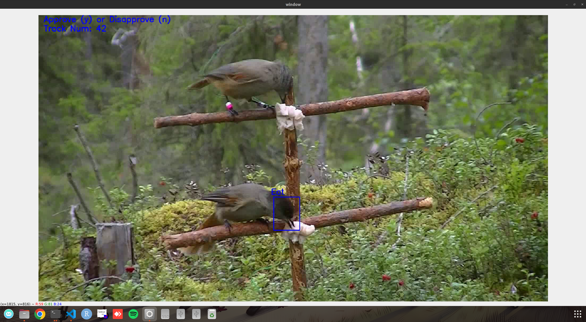
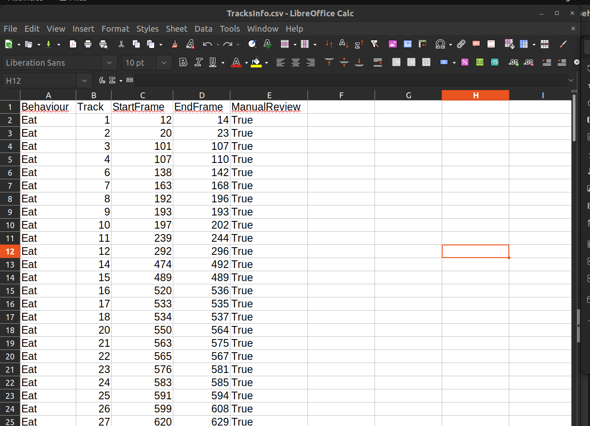

Human in the loop methods
Finally I will showcase the human-in-the-loop or hybrid application for the YOLO-Behaviour framework, basically first using YOLO to extract events, then manually review if the detected events are correct.
We will once again try this using the Jay sample video, where videos will be written then manually reviewed.
To run the human in the loop script with the Siberian Jay data, you will need to run the following in the terminal:
python Code/8_HumanInLoopSample.py --Video "./Data/JaySampleData/Jay_Sample.mp4" --Detection "./Data/JaySampleData/Jay_Sample_YOLO.pkl" --Param "./Data/JaySampleData/Jay_Sample_HyperParameters.json"
Here are the arguments:
--Video: Path to the sample video
--Detection: Path to pickle file from the inference script (see Visualization and inference)
--Param: Path to the hyperparameter json file
After running the script, you will see videos being written of detected events in a folder in the same directory as the pickle file, and a window will pop up for manual review of behavioural events. Each event will be looped and played in the window, with a blue box for where YOLO detected the behaviour.
Here are the keyboard controls:
Y: To accept the detection as correct
N: To reject the detection
After going through every clip, a csv will be updated of the events, which will be outputted into the same folder where the videos are.
The ManualReview column is then saves whether the event was correctly detected as True or False for further analysis.